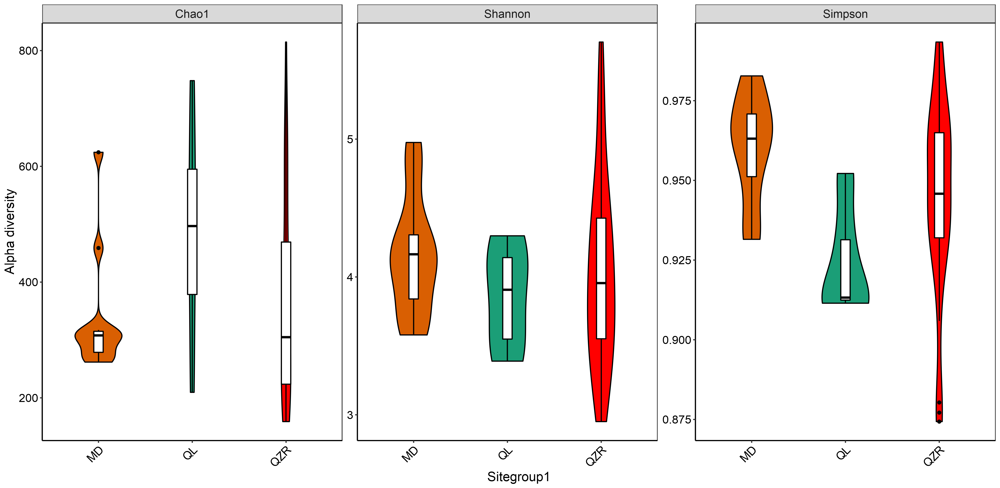

Set work directory
setwd('E:/thermokast_lakes/water_microbes/')
Loading packages
ipak <- function(pkg){
new.pkg <- pkg[!(pkg %in% installed.packages()[, "Package"])]
if (length(new.pkg))
install.packages(new.pkg, dependencies = TRUE)
sapply(pkg, require, character.only = TRUE, warn.conflicts = FALSE)
}
pkgs <- c('ape', 'Biostrings', 'phyloseq',
'tidyr', 'dplyr', 'ggplot2')
ipak(pkgs)
Conduct a phyloseq project
#read in metadata
metadata <- read.csv("./meta_analysis/data/meta_data/sample_data.csv",
header = T, row.names = 1)
#read in otu table
meta.otu.table <- read.csv("./meta_analysis/data/meta_data/meta_otu_table.csv",
header = T, row.names = 1, stringsAsFactors = F)
meta.otu.table <- as.matrix(meta.otu.table)
#read in taxonomy
meta.taxonomy <- read.csv("./meta_analysis/data/meta_data/meta_taxonomy.csv",sep=",",row.names=1)
meta.taxonomy <- as.matrix(meta.taxonomy)
# read in tree
meta.phy.tree <- read_tree("./meta_analysis/data/meta_data/meta_tree.nwk")
#read in represent dna sequences
meta.ref.seqs <- readDNAStringSet(file = "./meta_analysis/data/meta_data/meta_ref_seqs.fasta",
format = "fasta", nrec = -1L, skip = 0L, seek.first.rec = FALSE, use.names = TRUE)
meta.otu.table <- otu_table(meta.otu.table, taxa_are_rows = TRUE)
meta.tax.table <- tax_table(meta.taxonomy)
meta.table <- sample_data(metadata)
meta_physeq <- phyloseq(meta.tax.table, meta.otu.table, meta.table, meta.phy.tree, meta.ref.seqs)
meta_physeq
phyloseq-class experiment-level object
otu_table() OTU Table: [ 10250 taxa and 320 samples ]
sample_data() Sample Data: [ 320 samples by 38 sample variables ]
tax_table() Taxonomy Table: [ 10250 taxa by 8 taxonomic ranks ]
phy_tree() Phylogenetic Tree: [ 10250 tips and 10227 internal nodes ]
refseq() DNAStringSet: [ 10250 reference sequences ]
Determine the alpha diversity
diversity <- estimate_richness(meta_physeq, measures = c("Chao1", 'Shannon', 'Simpson'))
meta_diversity <- cbind(diversity, Region = metadata$Region,
Site = metadata$Site, Sitegroup1 = metadata$Sitegroup1)
knitr::kable(meta_diversity[1:5, 1:7])
|
Chao1 |
se.chao1 |
Shannon |
Simpson |
Region |
Site |
Sitegroup1 |
| ERR4650773 |
44.0000 |
9.625787 |
1.661566 |
0.742798 |
Pan-Arctic |
A |
North_East Siberia |
| ERR4650774 |
45.1000 |
6.481545 |
1.660527 |
0.726742 |
Pan-Arctic |
A |
North_East Siberia |
| ERR4650775 |
127.2308 |
23.000918 |
2.428847 |
0.802124 |
Pan-Arctic |
A |
North_East Siberia |
| ERR4650776 |
121.1765 |
17.164433 |
2.619853 |
0.841466 |
Pan-Arctic |
A |
North_East Siberia |
| ERR4650777 |
105.5652 |
10.045071 |
2.966866 |
0.900248 |
Pan-Arctic |
A |
North_East Siberia |
Manipulating and analyzing data with dplyr and tidyr
tp_alpha_div <- meta_diversity %>%
filter(Region == 'Tibetan Plateau') %>%
dplyr::select(-c(2)) %>%
group_by(Region, Site, Sitegroup1) %>%
dplyr::summarise(across(, mean, na.rm = TRUE)) %>%
tidyr::gather(diversity, value, -c('Region', 'Site', 'Sitegroup1')) %>%
dplyr::mutate(Sitegroup1 = factor(Sitegroup1, levels = c('MD', 'QL', 'QZR')))
knitr::kable(tp_alpha_div[1:6, ])
`summarise()` regrouping output by 'Region', 'Site' (override with `.groups` argument)
| Region |
Site |
Sitegroup1 |
diversity |
value |
| Tibetan Plateau |
Z1 |
QL |
Chao1 |
496.7214 |
| Tibetan Plateau |
Z10 |
QZR |
Chao1 |
415.7837 |
| Tibetan Plateau |
Z11 |
QZR |
Chao1 |
376.7769 |
| Tibetan Plateau |
Z12 |
QZR |
Chao1 |
387.1121 |
| Tibetan Plateau |
Z13 |
QZR |
Chao1 |
227.1032 |
| Tibetan Plateau |
Z14 |
QZR |
Chao1 |
517.1068 |
Plot with ggplot2
alpha_region_plot <- ggplot(tp_alpha_div, aes(x = Sitegroup1, y = value, fill = Sitegroup1)) +
geom_violin(trim=T, width=0.5, aes(fill = Sitegroup1), colour = "#000000") +
scale_fill_manual(values= c('#d95f02', '#1b9e77', 'red')) +
geom_boxplot(width=0.1, fill="white", colour = "#000000") +
labs(x = 'Sitegroup1', y = 'Alpha diversity') +
facet_wrap(~diversity, scales = 'free') +
theme_bw() +
theme(strip.text = element_text(size = 14),
axis.line = element_line(colour = "black"),
axis.title = element_text(size = 16, colour = 'black'),
axis.text = element_text(size = 14, colour = 'black'),
axis.text.x = element_text(colour='black', size = 14,
angle = 45, hjust = 1),
panel.grid = element_blank(), legend.position = 'none')
options(repr.plot.width = 6, repr.plot.height = 4, repr.plot.res = 300)
print(alpha_region_plot)
